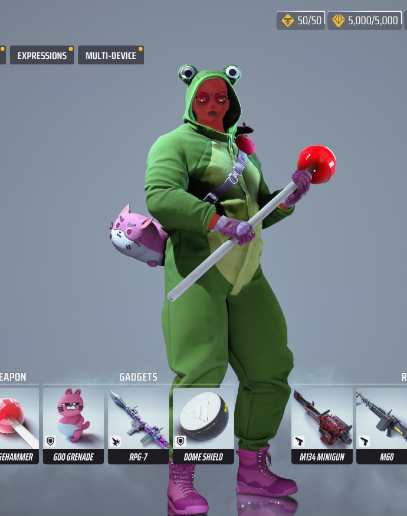

Most people haven't even heard of The FINALS yet, but it's a really fun game that I highly recommend checking out! Here's a link to one of my favorite trailers for The FINALS: The FINALS Season 9 Trailer
The customization options in The FINALS are amazing! You can really make your character stand out with all the different skins and accessories available. Here's what I look like in game:
